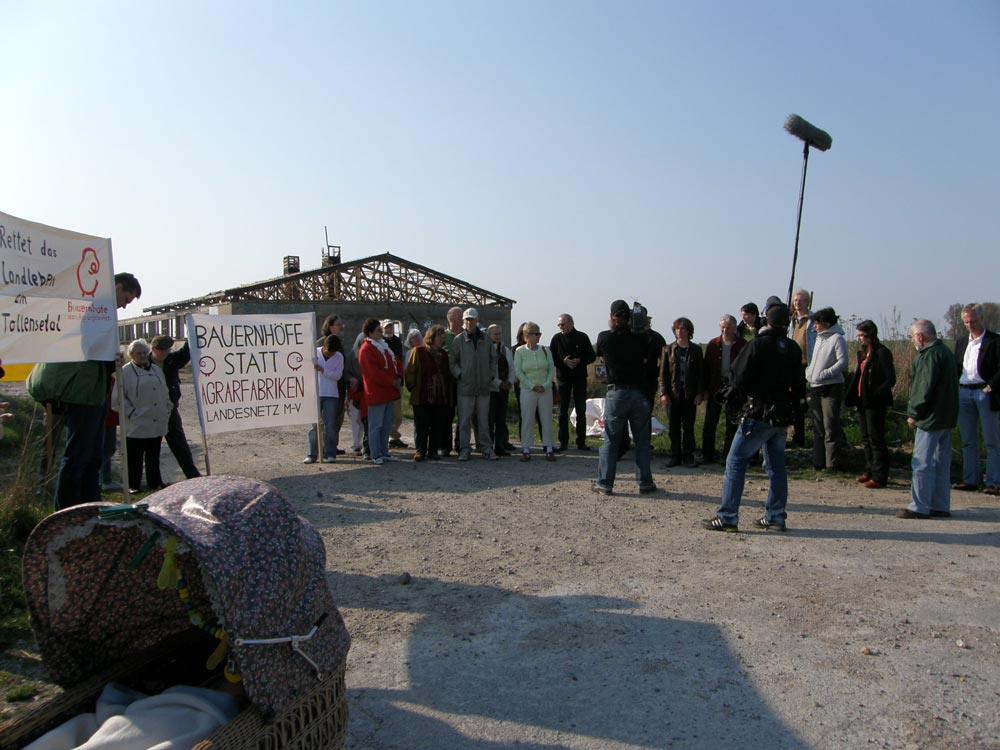

Aber wo sind die Akteure aus Wirtschaft, Wissenschaft, Umweltverbänden, Kirchen, Gewerkschaften und Medien?
Halten sie sich zurück, um dem Volk erst mal aufs Maul zu schaun?
Ende vergangenen Jahres berichtete der NDR: "Backhaus will neuen Masterplan für Tiermast".
Es gibt aber Betroffene der bisherigen Regierungspolitik, die den Auswirkungen der Massentierhaltung schon jetzt ausgesetzt sind oder ihnen in absehbarer Zeit ausgesetzt sein werden.
Denen hilft im Moment kein Perspektivplan. Schön wäre es, wenn sie sich trotzdem zu Wort melden würden.
Jan Reimond aus dem Umfeld der 400.000 Hühnermastanlage ist da eine Ausnahme.
Ansonsten vertreten hier "Landmaus" u. "landkind" die vom Ministerium vorgegebene Masterplanrichtung:
"es sind nicht unbedingt die größeren Tierhaltungsanlagen, die uns besorgt werden lassen sollten" u.
"Ich moechte aber eimal anregen darueber nachzudenken wer dort Arbeit finden kann? Es sind sicherlich nicht Menschen wie Sie und ich mit guter, fundierter Ausbildung, oertlich flexibel, weil finaziell unabhaengig,
sondern oftmals Menschen die vielleicht durch Haus und Grund gebunden, durch mangelhafte Ausbildung zusaetzlich unbeweglich in den angrenzenden Doerfern ihre Heimat haben."
Der erste Beitrag im Forum kam vom Agrarmarketing Mecklenburg-Vorpommern e.V. (AMV). "weuffen" betonte, dass sie sich vollkommen mit den "Schlaglichtern" auf dieser Homepage identifizieren.
Wie könnte das auch anders sein! Auf meinen Hinweis auf ein Zitat des Deutschen Bauernverbandes zur modernen Schweinehaltung und Fleischerzeugung, die dringend ein besseres Image braucht, kam die Antwort: dass hier jemand "einfach drauf schlägt und die gesamte Branche verunglimpft". Peinlich.
Denn die Veränderung der Ernährungsgewohnheiten in Europa u. der Welt hat verschiedene Folgen, die auch der AMV nicht ignorieren kann.
Der Fleischkonsum in Europa ist rückläufig, steigt aber enorm in Asien. Deutschland ist Europameister im Schweineexport.
Die Gülle u. andere Belästigungen für die hiesigen Humanressourcen bleiben im Land. Es wird immer schwieriger werden, dafür hier eine Akzeptanz zu finden.
Die Einwohner in MV sind inzwischen (2 Jahrzehnte nach der Wende) eine Mischung aus Hiergebliebenen u. Zugezogenen. Auch wenn unser Land bei den Patentanmeldungen den letzten Platz im Bundesvergleich belegt, sollte das kein Grund sein, die Menschen hier für dumm zu verkaufen.
Das "Teile u. Herrsche - Prinzip" nutzt zwar den Investoren, schadet aber beträchtlich dem sozialen Klima in den Dörfern.
Eine grundsätzliche Frage sollte unbedingt geklärt werden:
Wer hat im demokratischen MV das Sagen, die Mehrheit der menschlichen Bewohner oder die Verwalter von Land, Tier u. Technik?
[Anhang: <!-- ia0 -->2011-04-25-Fernsehen-MI.jpg<!-- ia0 -->]
